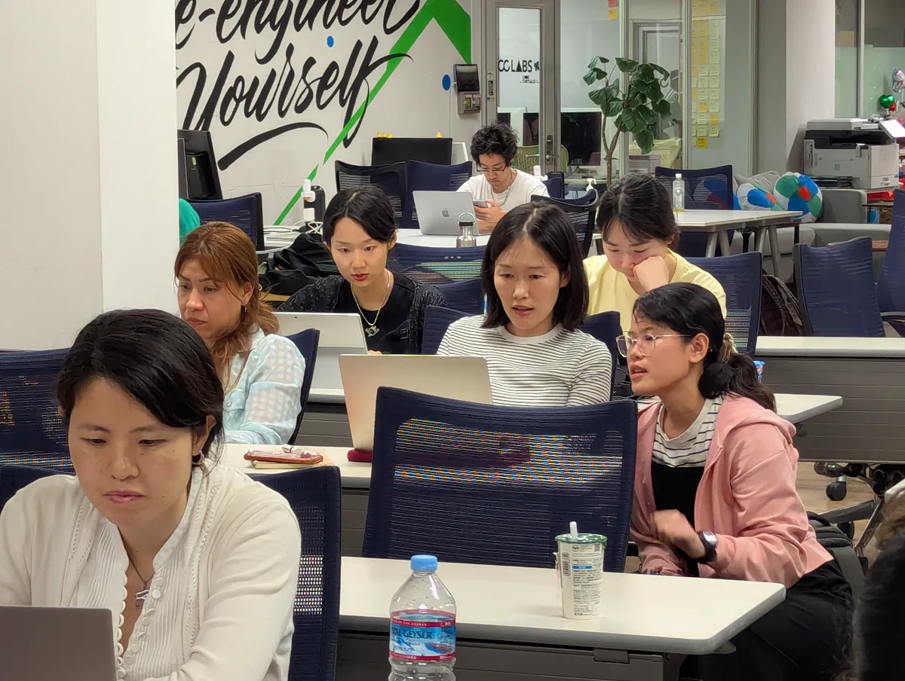

Machine Learning Summer School for Scientists
Program leadership and coordination
Founded and co-led a six-week program for 25 participants, earning a 9.6/10 satisfaction score.
Coordinated expert-led lectures, hands-on tutorials, and mentored projects covering computer vision, physics-informed machine learning, and LLMs for science.
Public lecture materials, Jupyter notebooks, and reference solutions are available in the course repository. Individual teaching materials are the work of their credited contributors.
